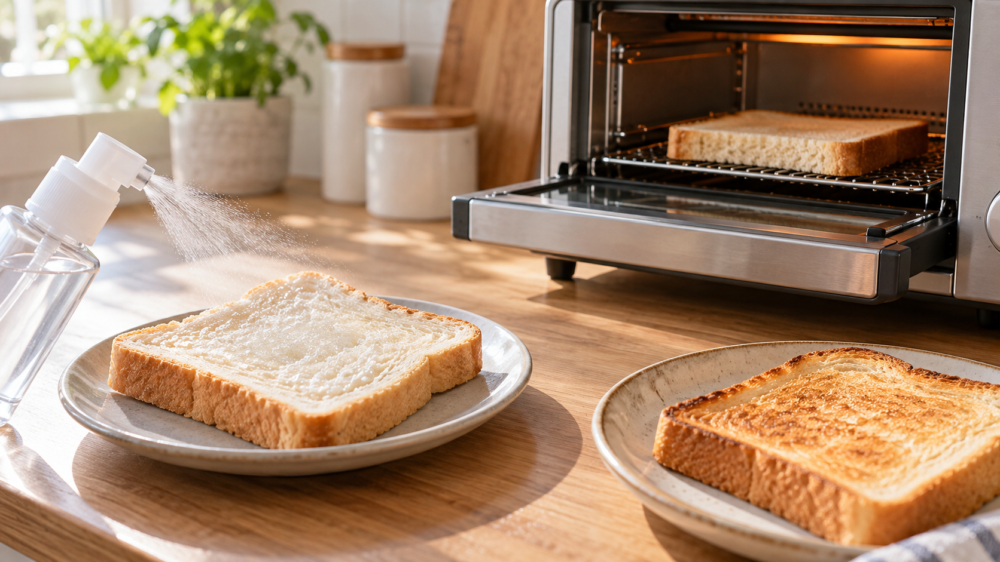

固くなったパンへ少量の水を足して温める｜水分とでんぷんの再加熱
昨日は柔らかかった食パンが、今日はぱさつく。そのまま焼くと、さらに硬く感じることもある。少し水をつけてから温める方法には、どんな理由があるのだろう。
結論は、表面をかすかに湿らせて短く温め、温かいうちに食べること。 温め直すと硬さが和らぐことは確かめられている。ただし、焼きたてと同じ状態には戻らない。水を足す工程は、パンの変化から考えた家庭向けの工夫だ。
硬くなるのは、乾くだけではない
パンを焼くと、小麦粉のでんぷんは水と熱を受けて柔らかくなる。冷めて時間がたつと、その一部が再び整列し、パンの中の水分も移動する。たとえるなら、ゆるんでいた糸が少しずつそろい、動きにくくなるようなものだ。水分が外へ逃げるだけでは、硬さを説明しきれない。
確認された結果と、そこから分かること
パンを保存して調べた研究では、時間とともに中身が硬くなり、でんぷんの状態と水分の分布も変わった。別の再加熱の研究では、温めると硬さが和らぐ一方、冷めると再び硬くなる様子が確かめられている。
つまり、硬くなったパンには熱を加える意味がある。そして、柔らかさを感じやすいのは温かいうちだ。一方、食パンの表面に水をつける方法そのものが、どの家庭のトースターでも同じ効果を出すとまでは、これらの研究から言えない。
家庭では、湿らせすぎず短く温める
トースターで温めると表面から水分が逃げる。そこで、ごく少量の水を表面につけてから温めるのは、乾きすぎを抑えるための提案だ。水を多くつけると食感が重くなりやすいので、濡らすことより、かすかに湿らせることを目標にする。
食パン1枚なら、次のように進めよう。
- カビや異臭がない食パンを用意する。霧吹き、または水で濡らした清潔な手で、表面を薄く湿らせる。水滴が落ちるほど濡らさない。
- オーブントースターで、表面が軽く色づくまで短く温める。時間は機種や厚さで変わるので、焼き具合を見て止める。
- 熱いパンを取り出すときはやけどに気をつけ、温かいうちに食べる。
ほかの食事にも使える考え方
ご飯を温め直すときも、硬さには水分とでんぷんの変化が関わる。ただし、ご飯とパンでは形も加熱方法も違う。どちらも「乾かしすぎずに温め、温かいうちに食べる」と考えると、次の一食で使いやすい。
まとめ
固くなったパンは、少量の水で表面を湿らせ、短く温めてすぐ食べる。柔らかさが戻るのは一時的で、水を足す量や焼き方に万能な正解はない。